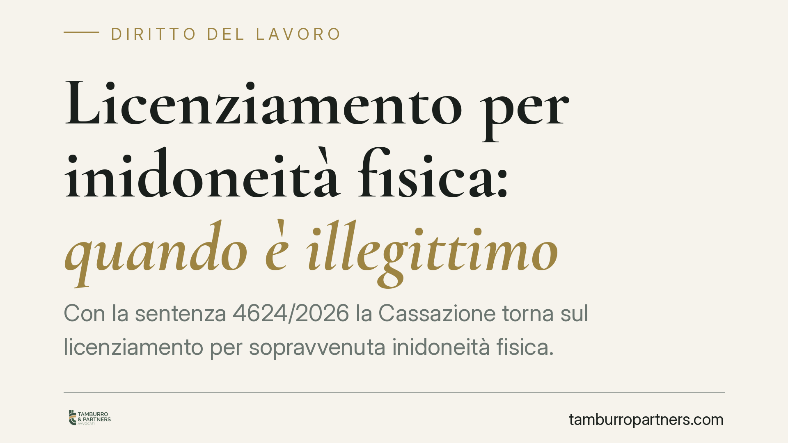

Licenziamento per inidoneità fisica: quando è illegittimo
Con la sentenza 4624/2026 la Cassazione torna sul licenziamento per sopravvenuta inidoneità fisica. Il principio è netto: il recesso è legittimo solo come ultima soluzione, dopo che il datore ha verificato ripescaggio, demansionamento e accomodamenti ragionevoli. E risponde anche degli errori del medico competente. Ecco cosa cambia per aziende e lavoratori.

Il caso e il principio
Un lavoratore dichiarato parzialmente inidoneo alle mansioni viene licenziato. La Corte di Cassazione, Sezione Lavoro, con la sentenza 4624/2026 conferma un orientamento ormai consolidato ma spesso ignorato nella pratica aziendale: il licenziamento per inidoneità fisica è l'ultima opzione (la cosiddetta *extrema ratio*), non la prima.
In altre parole, il datore non può limitarsi a prendere atto del giudizio del medico competente e procedere al recesso. Deve prima dimostrare di aver esaurito ogni alternativa concreta per conservare il posto di lavoro.
Inquadramento normativo
L'inidoneità sopravvenuta rientra fra i giustificati motivi oggettivi di licenziamento, ma la giurisprudenza vi ha applicato un sistema di tutele stratificato.
Il primo pilastro è l'obbligo di repêchage (il "ripescaggio"): prima di licenziare, l'azienda deve verificare se esistono mansioni diverse e compatibili con lo stato di salute del dipendente, anche inferiori rispetto a quelle originarie. Il demansionamento, cioè l'assegnazione a compiti di livello più basso, non solo è consentito ma può essere dovuto, quando serve a salvare il rapporto.
Il secondo pilastro riguarda i lavoratori disabili. L'art. 3, comma 3-bis, del D.lgs. 216/2003 impone al datore di adottare accomodamenti ragionevoli: modifiche organizzative, tecniche o di orario che consentano alla persona con disabilità di continuare a lavorare, purché non comportino oneri sproporzionati. È una regola di matrice europea (direttiva 2000/78/CE) che la Cassazione applica con rigore crescente.
Il terzo profilo, forse il più delicato, attiene alla responsabilità per il medico competente. La Corte richiama l'art. 1228 del codice civile, secondo cui chi si avvale di terzi nell'adempimento di un'obbligazione risponde dei loro fatti. Il datore, che nomina il medico competente, risponde quindi anche degli errori di quest'ultimo nel formulare il giudizio di idoneità. Non può scudarsi dietro una valutazione sanitaria rivelatasi sbagliata.
Implicazioni pratiche
Per le aziende il messaggio è chiaro: il giudizio di inidoneità del medico competente non è un lasciapassare automatico per il licenziamento. È solo il punto di partenza di una verifica più ampia, di cui il datore deve conservare traccia documentale.
La mancata attivazione del repêchage o degli accomodamenti ragionevoli rende il recesso illegittimo, con le conseguenze sanzionatorie previste dalla disciplina applicabile al rapporto (reintegra o indennità, a seconda del regime). L'onere di provare l'impossibilità di ricollocare il lavoratore grava sul datore, non sul dipendente.
Va aggiunto che il lavoratore può contestare il giudizio di inidoneità dinanzi all'organismo competente dell'ASL, che ha l'ultima parola in caso di dissenso. Un passaggio spesso trascurato ma decisivo.
Per il lavoratore, la pronuncia rafforza la posizione di chi riceve un licenziamento fondato unicamente sul certificato del medico competente, senza alcun tentativo di ricollocazione o adattamento della postazione.
Cosa fare in concreto
- Datori di lavoro: prima di qualsiasi recesso, documentate per iscritto la ricerca di mansioni alternative compatibili, anche inferiori, e l'eventuale impossibilità di adottare accomodamenti ragionevoli.
- Verificate la correttezza del giudizio sanitario: un errore del medico competente ricade sull'azienda ex art. 1228 c.c. Non limitatevi a recepirlo passivamente.
- Lavoratori: se il giudizio di inidoneità vi sembra errato, impugnatelo davanti all'organismo dell'ASL nei termini previsti, prima che il rapporto si chiuda.
- Lavoratori con disabilità: chiedete espressamente l'adozione di accomodamenti ragionevoli e conservate ogni richiesta scritta.
- In ogni caso: raccogliete subito la documentazione medica e aziendale. I termini di impugnazione del licenziamento sono brevi e decorrono rapidamente.
La sentenza 4624/2026 non introduce regole nuove, ma ricorda che l'inidoneità fisica non è di per sé una causa di espulsione dal lavoro. È un problema da gestire, con le tutele che l'ordinamento prevede, prima di diventare un motivo di licenziamento.
---
*Contributo informativo a cura di Tamburro & Partners - Avv. Giuseppe Tamburro. Non costituisce parere legale.*
Ogni storia di lavoro ha i suoi tempi.
Se gestisci HR e vuoi un confronto su contenzioso, ispezioni o licenziamenti, scrivi allo studio. Ti rispondiamo entro un giorno lavorativo.